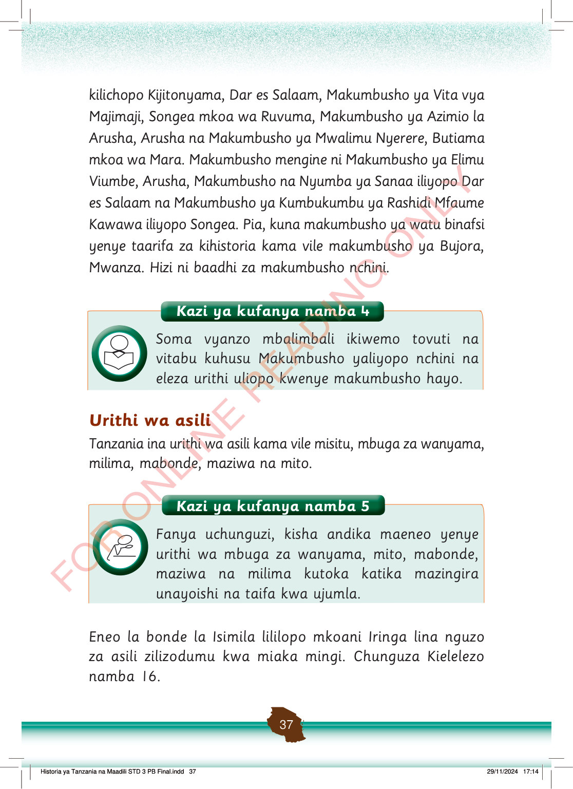

kilichopo Kijitonyama, Dar es Salaam, Makumbusho ya Vita vya Majimaji, Songea mkoa wa Ruvuma, Makumbusho ya Azimio la Arusha, Arusha na Makumbusho ya Mwalimu Nyerere, Butiama mkoa wa Mara.
Makumbusho mengine ni Makumbusho ya Elimu Viumbe, Arusha, Makumbusho na Nyumba ya Sanaa iliyopo Dar es Salaam na Makumbusho ya Kumbukumbu ya Rashidi Mfaume Kawawa iliyopo Songea.
Pia, kuna makumbusho ya watu binafsi yenye taarifa za kihistoria kama vile makumbusho ya Bujora, Mwanza.
Hizi ni baadhi za makumbusho nchini.
Kazi ya kufanya namba 4: Soma vyanzo mbalimbali, kama tovuti na vitabu, kuhusu makumbusho ya nchini na eleza urithi uliopo kwenye makumbusho hayo.
Soma vyanzo mbalimbali ikiwemo tovuti na vitabu kuhusu Makumbusho yaliyopo nchini na eleza urithi uliopo kwenye makumbusho hayo.
Urithi wa asili
Tanzania ina urithi wa asili kama vile misitu, mbuga za wanyama, milima, mabonde, maziwa na mito.
Kazi ya kufanya namba 5
Kazi ya kufanya namba 5: Fanya uchunguzi, kisha andika maelezo kuhusu urithi wa mbuga za wanyama, mito, mabonde, maziwa na milima katika mazingira unayoishi na katika taifa kwa ujumla.
Fanya uchunguzi, kisha andika maeneo yenye urithi wa mbuga za wanyama, mito, mabonde, maziwa na milima kutoka katika mazingira unayoishi na taifa kwa ujumla.
Eneo la bonde la Isimila lililopo mkoani Iringa lina nguzo za asili zilizodumu kwa miaka mingi.
Chunguza Kielelezo namba 16.